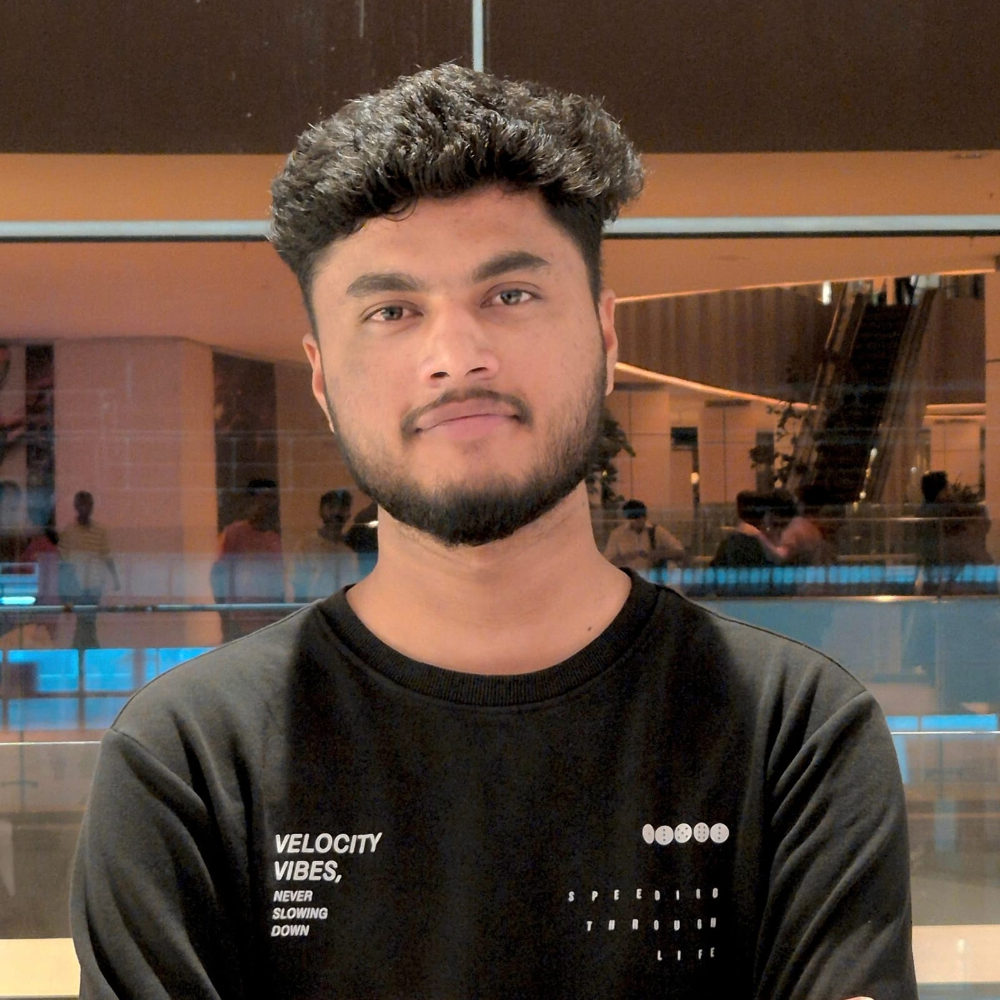

Data Engineer & Data Analyst
I design and build PySpark and Databricks ETL pipelines that turn raw, messy data into validated, star-schema models and analysis-ready datasets, then serve them through SQL and Power BI so business teams can trust and reuse them.

MCA graduate from SJB Institute of Technology, Bengaluru, focused on data engineering and analytics.
I build data pipelines end to end: ingesting raw data, cleaning and validating it, transforming it with PySpark and SQL, modeling it into a star schema, and delivering it to dashboards and reports. My work centers on data quality, batch processing, and reliable, reusable datasets.
On the analytics side I use SQL, Python, Power BI, and DAX to find patterns, track KPIs, and explain results to non-technical stakeholders. I also work with Google BigQuery, GA4, Looker Studio, AWS, and Azure.
I'm currently open to Data Engineer and Data Analyst roles in Bengaluru.
End-to-end projects covering ETL pipelines, data modeling, SQL, and business dashboards.